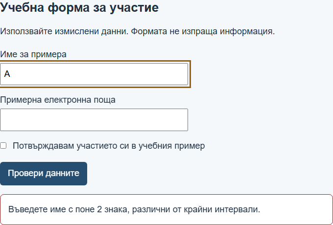
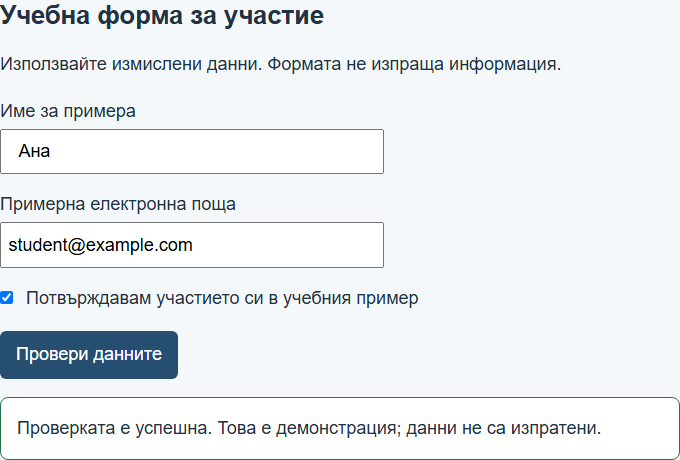

За какво е този урок?
Ще проверите последователно учебно име, имейл и отметка, ще покажете първата грешка и ще насочите фокуса към съответното поле. Поредицата свързва HTML структура, CSS оформление и JavaScript поведение.
Четете обясненията, изпробвайте действията и запазвайте работата си. Отворените въпроси показват примерен отговор след предаване. При собствена тема са възможни различни обосновани решения.
Събитие, състояние и видим резултат
Как работи задачата
HTML полетата описват какви стойности очакваме. JavaScript прочита въведеното и прилага условията. В примера името трябва да има поне два знака след премахване на крайните интервали; пощата трябва да отговаря на проверката за type="email"; потвърждението трябва да е отметнато.
trim()премахва интервалите в началото и края на текста.lengthдава дължината на получения текст.validity.validотчита дали полето отговаря на HTML ограниченията си.checkedпоказва състоянието на отметката.showError(field, text)използва два параметъра: кое поле е проблемно и какво съобщение да покаже.
След грешка focus() насочва към съответното поле. Добавяме aria-invalid и текстово съобщение, така че смисълът да не зависи само от червената рамка. При редакция старото потвърждение за успех се премахва.
Този урок е част от поредицата „Интерактивна уеб страница с JavaScript“: показване на подробности → смяна на тема → изчисления → проверка на форма → филтриране на списък. Общата ситуация е страница за училищни клубове: посетителят разглежда подробности, избира тема, изчислява учебна такса, проверява данни за участие и намира клуб. Всяка задача има собствен работещ пример и може да се изпълни самостоятелно. Общият подход е: избираме елементи, обработваме събитие, проверяваме състоянието и обновяваме видимия резултат.
Проверете първата грешка и я обяснете
novalidate изключва автоматичното спиране на submit от браузъра, за да покажем собствените съобщения. Ограниченията required и type="email" продължават да участват в validity.valid. Използваме го във функцията; novalidate не прави въведените данни правилни.
showError(field, text) има два параметъра. При извикване showError(emailInput, "Поправете адреса.") първият посочва полето, а вторият — съобщението. След return следващите проверки не се изпълняват. Така потребителят поправя проблемите един по един.
При нов submit изчистваме старите aria-invalid, а при редакция премахваме старото съобщение за успех. trim() не променя автоматично стойността в полето: връща нов текст за проверката. Валиден формат на имейл не доказва съществуваща пощенска кутия.


Работещ пример и подготовка
Работещ пример
Отворете работещия пример или изтеглете HTML файла.
Подгответе работния файл
- Изтеглете пълния работещ HTML пример. Запазете го като
26-javascript.htmlв своя папка. - Отворете един и същ файл в текстов редактор и в браузър. Записвайте с UTF-8 и разширение .html; след промяна запазвайте и презареждайте.
- В готовия файл CSS е между style таговете в head, HTML съдържанието е в body, а JavaScript е след елементите, преди затварящия body. Така те вече съществуват, когато ги избираме.
- За работа в CodePen отворете нов Pen и поставете отделните откъси от урока в HTML, CSS и JS. В JS не поставяйте script тагове. При предаване запазете резултата като пълен самостоятелен HTML файл; най-прекият начин е да пренесете промените в изтегления пример.
Ако действието не работи, отворете инструментите за разработчици с F12 или менюто на браузъра и изберете Console. Започнете от първата грешка: проверете точните id, имената на променливите, кавичките, скобите и мястото на script. След поправка запазете, презаредете и повторете действието. Неправилен id може да даде null, а повторно обявено const със същото име — грешка.
HTML елементи и CSS оформление
HTML — елементите
<h1>Учебна форма за участие</h1>
<p>Използвайте измислени данни. Формата не изпраща информация.</p>
<form id="signup" novalidate>
<label for="student-name">Име за примера</label>
<input id="student-name" name="studentName" type="text" required aria-describedby="message">
<label for="email">Примерна електронна поща</label>
<input id="email" name="email" type="email" required aria-describedby="message">
<label for="agree"><input id="agree" name="agree" type="checkbox" required aria-describedby="message"> Потвърждавам участието си в учебния пример</label>
<p><button type="submit">Провери данните</button></p>
</form>
<p id="message" class="card" role="status">Попълнете трите полета.</p>CSS — оформлението
* { box-sizing: border-box; }
body { margin: 0; padding: 20px; font: 18px/1.6 Arial, sans-serif; color: #203244; background: #f5f8fa; }
.demo { max-width: 680px; margin: auto; }
h1 { font-size: 1.6rem; line-height: 1.25; }
button { font: inherit; padding: .6rem 1rem; color: white; background: #254e70; border: 0; border-radius: 6px; cursor: pointer; }
button:focus-visible, input:focus-visible { outline: 3px solid #a06000; outline-offset: 3px; }
input { display: block; width: 100%; max-width: 24rem; font: inherit; padding: .4rem; margin: .2rem 0 1rem; }
.card { background: white; border: 1px solid #b5c9d4; border-radius: 8px; padding: 1rem; margin: 1rem 0; }
[hidden] { display: none !important; }
input[type="checkbox"] { display: inline-block; width: auto; margin: 0 .5rem 0 0; }
[aria-invalid="true"] { outline: 2px solid #9b2525; }
.error { border-color: #9b2525; }
.success { border-color: #287247; }Проследете JavaScript кода
JavaScript — поведението
const form = document.querySelector("#signup");
const nameInput = document.querySelector("#student-name");
const emailInput = document.querySelector("#email");
const agreeInput = document.querySelector("#agree");
const message = document.querySelector("#message");
function showError(field, text) {
message.textContent = text;
message.classList.add("error");
message.classList.remove("success");
field.setAttribute("aria-invalid", "true");
field.focus();
}
function validateForm(event) {
event.preventDefault();
nameInput.removeAttribute("aria-invalid");
emailInput.removeAttribute("aria-invalid");
agreeInput.removeAttribute("aria-invalid");
if (nameInput.value.trim().length < 2) {
showError(nameInput, "Въведете име с поне 2 знака, различни от крайни интервали.");
return;
}
if (emailInput.value.trim() === "" || !emailInput.validity.valid) {
showError(emailInput, "Въведете примерен адрес във формат име@домейн.");
return;
}
if (!agreeInput.checked) {
showError(agreeInput, "Отбележете потвърждението за учебния пример.");
return;
}
message.classList.remove("error");
message.classList.add("success");
message.textContent = "Проверката е успешна. Това е демонстрация; данни не са изпратени.";
}
form.addEventListener("submit", validateForm);
form.addEventListener("input", function (event) {
event.target.removeAttribute("aria-invalid");
message.classList.remove("error", "success");
message.textContent = "Данните са променени. Проверете ги отново.";
});Самостоятелна работа и проверки
Самостоятелна работа
- Изпълнете примера в работния HTML файл или в CodePen, като използвате измислени данни.
- Проверете полетата в реда от таблицата и проследете преместването на фокуса.
- Променете минималната дължина на името на 3 и актуализирайте съобщението.
- Добавете кратко пояснение под поле, без да заменяте неговия label с placeholder.
- Проверете с клавиатура и след промяна на вече валидни данни.
Резултат: ваш работещ вариант и кратка бележка какво сте променили и проверили.
Проверете резултата
| Проверка | Очакван резултат |
|---|---|
| Всички полета са празни | Съобщение за името и фокус в него. |
| Само интервали в името | Проверката на името не минава. |
| Име „Тест“, поща „грешка“ | Съобщение за адреса и фокус в полето за поща. |
| Тест, student@example.com, без отметка | Съобщение за потвърждението. |
| Валидни примерни данни и отметка | Успешна проверка с ясно указание, че няма изпратени данни. |
| Редакция след успех | Успехът се заменя с указание за повторна проверка. |
Прочетете още
MDN — проверка на ограниченията във форма; урок 18 — HTML форми.
Проверка с по-ясни правила за името
- Запазете пълния пример като
26-javascript.html. Използвайте измислено име и student@example.com; запазете preventDefault и съобщението, че данни не са изпратени. - Променете условието за името от <2 на <3 и съобщението на „Въведете име с поне 3 знака, различни от крайни интервали.“ Условието и съобщението трябва да съвпадат.
- Под полето за име добавете p id="name-help" с текст „Поне 3 знака след премахване на крайните интервали.“ В неговото aria-describedby запазете message и добавете name-help, разделени с интервал. Запазете label и уникалните id.
- Проверете празен текст, само интервали, „Ал“ и „Ана“. Първите три трябва да спрат на името, а „Ана“ да позволи следващата проверка. Проверете и „ Ана “.
- С валидно име проверете „грешка“ като имейл; после валиден примерен адрес без отметка; накрая валиден адрес и отметка. При грешка очаквайте конкретно съобщение, aria-invalid="true" и фокус в първото проблемно поле.
- Редактирайте след успех: успехът трябва да изчезне. Повторете с клавиатура и проверете Console. Формата остава локална демонстрация.
Самопроверка
Достатъчни ли са интервалите?
След trim получаваме празен текст с дължина 0, „Ал“ с дължина 2 и „Ана“ с дължина 3. Само последният пример минава правилото за минимум 3. Trim връща нов текст, без автоматично да променя полето.
Коя грешка се показва първа?
В полето за име. Проверяваме го първо; showError показва съобщението и премества фокуса, а return прекратява функцията. След поправка и нов submit може да се покаже следващият проблем.
Успех означава ли регистрация?
PreventDefault спира стандартното изпращане и няма сървърно записване. Форматът на имейла не доказва достъпна кутия. В реална услуга клиентският код може да се заобиколи и сървърът също трябва да проверява входа.
Какво да запомним?
- Trim връща текст без крайните интервали.
- Validity.valid отчита HTML ограниченията на полето.
- Checked показва дали отметката е избрана.
- Грешката се описва с текст и фокус, не само с цвят.
- Клиентската проверка не заменя сървърната.